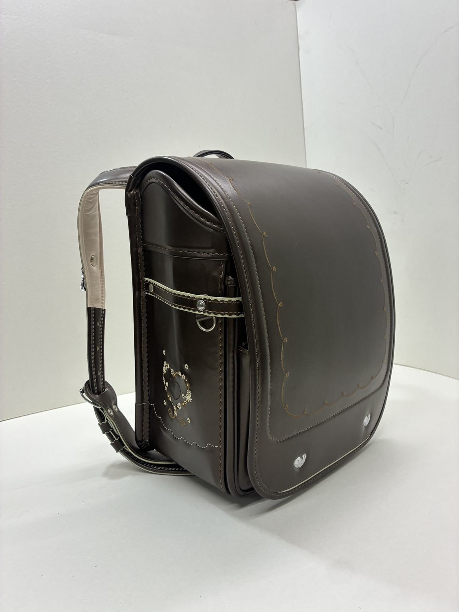
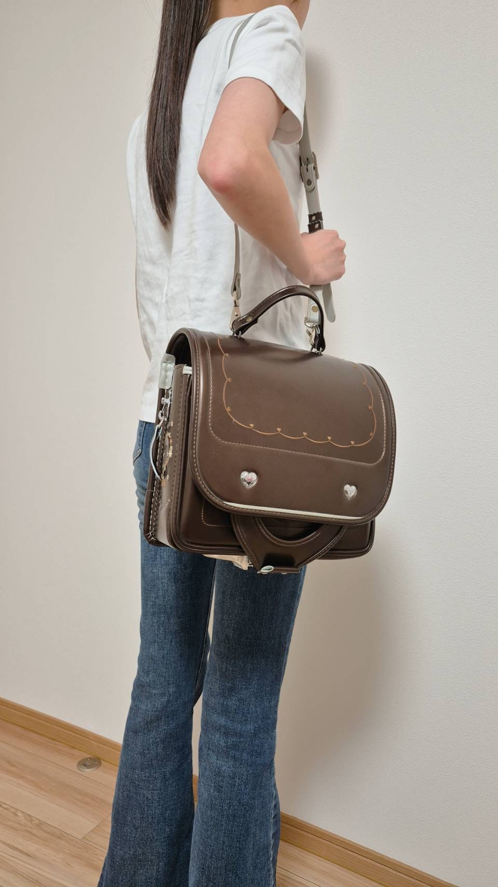
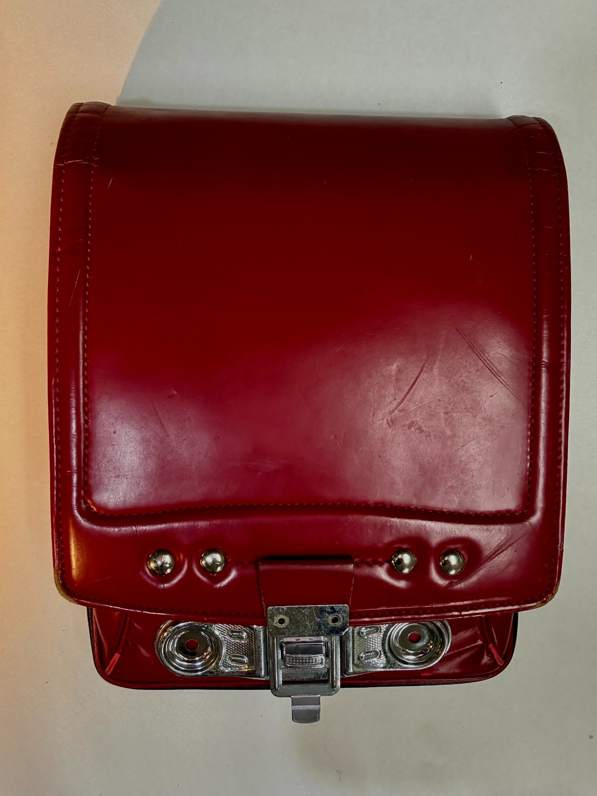
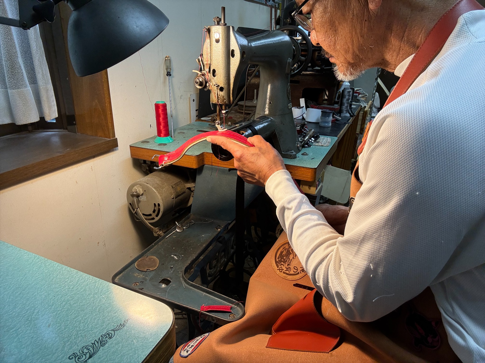

IKEDO KABAN KOBO / TAJIMI GIFU
思い出を、
毎日に。
6年間をともにしたランドセルを、これからも使えるバッグや革小物へ。残せる部分を見極め、一点ずつ仕立て直します。
まずは正面・背面・側面の写真3枚で大丈夫です。
BEFORE / AFTER
ランドセルの面影を残し、
普段使いできる形へ。
ただ小物に分けるのではなく、かぶせ・ステッチ・金具・傷など、そのランドセルらしさをできるだけ残します。


OUR STANDARD
「全部使う」より、
「長く使える」を優先します。
ランドセルは、見た目だけでは分からない劣化がある場合があります。無理に傷んだ素材を使わず、残せるところ・新しい革に替えるところを職人が判断します。
状態を確認
ひび割れ、べたつき、剥がれを確認します。
思い出を残す
模様や金具など、残したい部分を伺います。
無理に作らない
長く使えないと判断した素材は無理に使いません。
CUSTOMER VOICE
「ランドセルだった頃の面影が、ちゃんと残っていました。」
6年間大切に使ったランドセルだったので、思い出を何かの形で残したくてお願いしました。
完成したバッグは想像以上で、特に元のランドセルについていたハートの部分を活かしてもらえたのが嬉しかったです。
思い出を残しながら、新しいバッグとしてまた使える。リメイクしてよかったと思いました。
― ランドセルリメイク モニター様
BEFORE YOUR CONSULTATION
ランドセルリメイク事前確認
分かる範囲で選び、回答をコピーしてください。ランドセルの写真と一緒にInstagramのDMへ送れます。
PRICE
価格について
ランドセルの状態、仕様、金具交換の有無を確認し、制作前にお見積りします。
参考価格
35,000円〜
35,000円〜
状態や仕様により金額は変わります。まずは写真を送ってご相談ください。
FLOW
ご相談からお渡しまで
1. Instagramで相談
2. 写真で状態確認
3. 現物確認・仕様・お見積り
4. 制作・お渡し
WORKS / CRAFT
仕立ての仕事
完成品だけでなく、見えなくなる部分の仕事も大切にしています。

残す
元の金具や特徴を、使える範囲で活かします。

整える
革漉き機で厚みを整え、仕立てやすく長く使える状態へ。

仕立てる
一点ずつ状態を見ながら仕立てます。
CONTACT
まずは、写真からご相談ください。
正面・背面・側面の写真を送っていただければ、作れそうな形をご案内します。正式なお見積りと制作可否は現物確認後に決定します。